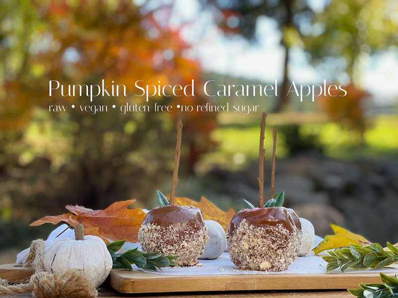
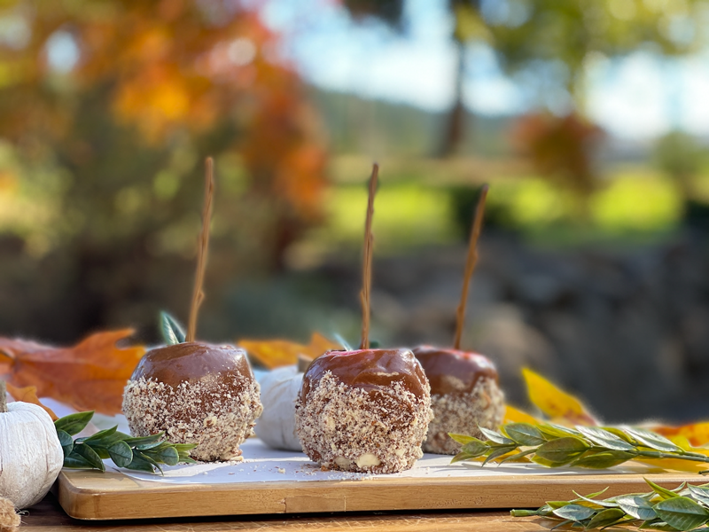

Pumpkin Spice Caramel Apples | raw, vegan
Fall is in full swing, and what better way to celebrate than with a traditional county harvest festival treat?! This recipe doesn’t require any cooking heat, candy thermometers, or hours of preparation. The pumpkin spice caramel sauce can be made in minutes, instantly ready to coat your sweet, crisp apples! Feeling a little bit of that autumn sunlight laziness? Skip coating the apples and just dip sliced apple pieces into the caramel sauce. Easy peasy!

2021 has been one of the craziest, busiest years for me by far. I have spent countless days working in the cherry orchard, mowing fields and pastures, tackling an invasion of four different invasive weeds (by hand!), hauling rocks by hand to build walls and garden borders, building shade gardens, reconstructing some landscaping to reduce future workloads, and so on. This is one of the big reasons why I have been a bit quiet on my end. I have also been battling some health issues as well as taking care of Bob as he heals from a pretty intense surgery. Life has been full, but in the end, we still feel mightily blessed.
I have been looking so forward to fall and winter. I WANT things to slow down a bit so I can catch my breath. Plus, who doesn’t enjoy the autumn season? The changing of colors, the crisp air, big fluffy sweaters; outside demands start to simmer down, and the warm coziness within the walls of our home is like a constant hug, embracing and encouraging us to just relax. But if we are to usher fall in properly, we must do with a beloved pumpkin-spiced treat. I’m ready if you are! So, let’s dive in, shall we?!
Selecting Apples
You need to give some serious thought to the type of apple you plan on using, because the apple is just as important as the caramel coating. The best apples to use when making caramel apples are those that are easy to bite into, maintain a juicy crunch, and have a slightly tart flavor to help balance the sweetness of the caramel coating.
Choose smaller apples if you can find them. The really big apples look impressive when they are first coated in caramel, but the smaller ones give you a better ratio of apple to sweet topping, plus a smaller size helps prevent ove-indulgence. Aesthetically, choose apples that are as perfectly round as possible, with an even bottom, so they will sit nicely on a platter and they won’t topple over.

Apple Variety Suggestions
- A tart Granny Smith apple is an excellent choice and is the standard go-to apple for many caramel apple makers. The tartness counters the sweetness of the caramel topping and the pretty green color of the apple nicely complements the golden color of the caramel.
- Honeycrisp apples have a great all-around sweetness, tartness, and firmness.
- Jonagold apples have the perfect balance between sweetness and sourness to accentuate the caramel topping.
- Pippin apples work well for their crispness.
- Whatever you do… DO NOT use mealy-textured apples.
Caramel Apple-Making Tips
- Rinse and dry the apples.
- If your apples have a waxy coating, be sure to wash that off, otherwise it will prevent the caramel from sticking–plus, who wants to eat that stuff?
- Make sure the apples are cold, which helps the caramel to set.
- Remove the apple’s stem and insert a caramel apple stick. Try to make a quick swift poke into the apple. The more you have to wiggle and fight it to go in, the more chances you create of the stick falling out when dunking the apple in the caramel sauce, or the apple could fall off while biting it. Ask me how I know.
Well, are you ready to hop into the kitchen? I will patiently wait for you to tie those apron stings, and then I will meet you in the kitchen. Many blessings, amie sue
Ingredients:
Yields – it all depends on the size of apples
- 1/2 cup raw almond butter
- 1/2 cup maple syrup
- 1/2 cup PACKED, moist Medjool dates
- 2 tsp vanilla extract
- 2 tsp pumpkin pie spice
- 1/8 tsp Himalayan pink salt
- 4-6 small apples
- 4-6 apple sticks
- crushed nuts for coating *optional
Preparation:
Caramel Coating
- Place the almond butter, maple syrup, dates, vanilla, pumpkin spice, and salt in a high-powered blender and process until smooth.
- If the dates you are using are dry and tough, soak them in enough warm water to cover them for roughly 15 minutes. Drain, rinse, and squeeze the excess water from them before adding them into the recipe.
- This sauce/frosting is very thick and will need a high-powered blender, along with the use of the tamper.
- Stop occasionally to scrape the sides down and blend until creamy smooth.
Assembly
- Wash and dry the apples.
- Remove the apple stems so you can poke in the caramel apple sticks.
- Dip the apple into the caramel, rotating to ensure that the sauce coats the whole apple.
- Roll the caramel-coated apple in crushed almonds (or nut of choice).
- These will keep at room temp if you are making them for an event. Store leftovers in the fridge.
© AmieSue.com